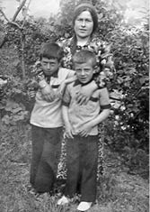
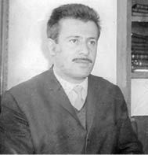
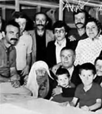
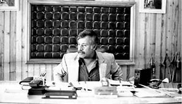

“Annene İyi Bak, O Çok Çekti!”
Naci Sönmez10
Babam Fikri Sönmez 12 Eylül’den iki ay önce, 11 Temmuz 1980’de, Fatsa’da gerçekleştirilen Nokta Operasyonu’nda tutuklandı. 5 Mayıs 1985 tarihine, yani öldüğü güne kadar içeride kaldı. Babam, THKP-C sürecinden gelen bir mücadelenin içindeydi. Mahir Çayan ve arkadaşları ile birlikte olmuş, Kızıldere Katliamı’nda yardım ve yataklık yapmaktan 2 yılı aşkın bir süre de tutuklu kalmıştı. Devrimciydi, sosyalistti ve 12 Eylül sürecinden önce de Devrimci-Yol’cuydu. O hareketin önemli simalarından biriydi, halk insanıydı. Fatsa Belediye Başkanlığı’na her kesimden halkın büyük desteğiyle gelmişti. Dava sürecinde devlet içinde devlet yaratmak, Fatsa’yı vatan topraklarından çıkarmak ve sosyalist bir cumhuriyet kurma girişiminde bulunmak, belediyedeki kamu olanaklarını da mevcut örgütün politik çıkarlarına kanalize etmek gibi aslı astarı olmayan gerekçelerle suçlandı ve yargılandı. Anayasal düzeni silah zoruyla yıkmaya teşebbüsten, 146/1. maddeden, idam cezası isteniyordu hakkında.
Darbeden Önceki Hayat
Ben gözümü açtığımda, babam Fatsa’daki siyasi mücadelenin içindeydi. Bir anlamda bu ortamın içine doğmuştum. Benim hatırlayamadığım yıllarda babamın siyasetle bir bağı yokmuş. 1965 yılından itibaren ilgilenmeye başlamış. Çocuk denebileceğim yaş, 12 Mart ve sonrası süreçtir. Okula başladığım dönemde evimizin basıldığını, Mahir Çayan’ın arandığını hatırlıyorum. Babamı alıp götürüyorlar, Ankara Mamak, İstanbul Selimiye ve Maltepe cezaevlerini hatırlıyorum.
Annem ev kadınıydı. Mitinglere giderdi. Babamın yakın çevresinde bulunurdu ama politik olarak daha çok, hayatın ev kısmındaydı.
İlkokul 3 veya 4. sınıftayım. Bizim orada fıtık derler, saklambaç gibi bir oyundur, çocuklar onu oynardı. Biz devrimcilik oynardık. Küçük Karabalık gibi kitaplarla büyüdük. Hatta lisenin başlarında ben çocuk yaşta evi terk ettim. Annem büyük bir isyanla karşı çıkmıştı. Bir karyolamız vardı kullanılmayan, onu almıştım. Bir öğrenci evi tutmuştuk. Devrimci yaşamak gibi ideallerimiz vardı. Okul sonrası daha çok öğrenci evlerine gidiyorduk. Seminer çalışmaları yapıyorduk. Sınıflarda da eğitim çalışmaları devam ediyordu. Özellikle boş dersler vardı ya da kimi derslerin 2 saatini 1 saate indiriyorduk, öğretmenlere biz Devrimci-Yol’cu gençler politik çalışma yapacağız diyorduk. Böyle bir hegemonyamız vardı. Bu çalışmalar bizi geliştiriyordu aynı zamanda. Hemen hemen 15-20 civarında öğrenci evi vardı. Kırsal bölgelerden gelen, lisede okuyan öğrencilerin oturdukları evlerdi bunlar. Bizim üslerimiz gibiydi. Kendi evimizi biraz illegal tutuyorduk. Bizim evimizi kimse bilmezdi, daha önder gibiydik bize sempati duyan arkadaşlar içinde. Kurallarımız vardı. Öğrencilerin takıldığı kahvehaneler vardı, daha çok yeraltına giren, zemin katlardaki kahvehanelerdi bunlar. Oralarda gencecik çocuklar okey gibi oyunlar oynardı. Devrimciler için bunlar yasak, yapılmaması gereken şeylerdi. Bizim etrafımızda olan gençlerin oralarda oyun oynayıp oynamadığını kontrole giderdik. Bulduğumuzda bazı yaptırımlar uygulardık. İlişkilerin dışına düşürürdük, 10-15 gün, 1 ay. Bir nevi film gibi ama kendimize ilişkin bir hayat kuruluydu, disipline ediyorduk o hayatı. Kurmak istediğimiz dünyaya ulaşmak için bu kurallar geçerli kurallardı. Bunu kim zaafa uğratırsa o mücadeleyi sekteye uğratıyor diye düşünüyorduk. Daha sonrası bir sınav gibiydi. Kim o kurallara düzgün uyuyorsa o, bir anlamda ödüllendiriliyordu daha üst mertebelerde değerlendiriliyordu. Özel sohbetlere dahil ediliyordu. Böyle bir hayattı. Çocukluğumda biraz devrimcilik oynamak gibi bir şeydi bizimkisi.
Ben ortaokuldaydım. Halkevi’ne giderdim. O zamanlar öğretmenlerimiz vardı. Hafta içi sınıfta ders verirler, hafta sonu Halkevi’nde sınıflar, feodalizm, kapitalizm, sosyalizm, felsefenin temel ilkeleri gibi konuları anlatırlardı. Müthiş etkileyici bir şeydi o.
Bir de anımsadığım bir şey, şimdi 30-40 yıl sonra geldiğimiz noktaya, özellikle MHP’nin Atatürkçü kesildiği bir çizgiye bakınca o yıllarda mesela biz Halkevi’nde Atatürk’ün Kocatepe rozetini taşıyorduk yakamızda. MHP’liler o rozeti gördükleri çocuklara ve gençlere saldırırlardı. O anlamda düşman simgesiydi Atatürk rozetini takmak, Halkevi’ne gidip gelmek, o zamanki mitinglere katılmak... Yaşımızın üzerinde politize olmuş bir ortam vardı.
Fatsa Deneyi
Tabii ben o günleri çok net hatırlıyorum. Şimdi geriye dönüp baktığımda bir rüya gibi geliyor. Bir rüya görmüşsünüz, ayılmışsınız ve sanki böyle bir şey olmamış, hayal âlemindeymişsiniz gibi. Bu korkunç bir his. Fatsa deneyi hepimizi etkileyen bir süreçti. Nasıl olmuştu, nasıl başarmıştık, bunların hepsi ayrı bir tartışma konusu ama düşünün koca bir ülkede bir kentte, küçük bir kasabada o kentin, bütün toplumsal hayat biçimlerine karşı örgütlenme tarzı değişmiş. Can Yücellerin, Murat Belgelerin ve diğerlerinin anlattıklarından da yola çıkarsak orada bambaşka bir yaşam vardı. Devletin de korktuğu zaten o olmuştu, orada başka bir hayat yeşermişti.
Ütopya gibi duran, gelecekte sosyalizm nasıl olacak sorusunun yanıtını sanki o gün Fatsa’ya gelseniz hemen orada görebilirdi-

Naci ve Yusuf Sönmez anneleriyle
birlikte
niz. Kadınlar mesela, Türkiye gibi, özellikle de Karadeniz gibi feodalizmin çok derin köklerinin olduğu bir bölgede, siyaseten tamamen öne çıkmışlardı. Bunlar okumuş, entelektüel kadınlar değildi, evinde yemek yapan, ütü yapan, çamaşır yıkayan kadınlardı ve adeta erkeklere inat bir halde artık hayata tutunmuşlardı. Kadın erkek eşitliğinin bile çok ciddi olarak belirginleştiği bir yerdi orası. Bir hayat kadını bile halk komitesine seçilmişti.
Tabii ki Fatsa durduk yerde Fatsa olmadı. Fatsa, ilk köylü yürüyüşünün olduğu yer. Behiceli Köyü, Türkiye’de köylülerin ilk yürüdüğü yer olarak bilinir bir yol için. İkincisi, fındık mitinglerinin ilginç boyutlara vardığı 1969-1970 yılında fındık tüccarları fiyat istemek için orada miting düzenliyorlar ve devrimciler, Fikri Sönmez, Ziya Yılmaz, Ertan Sarıhan, Ahmet Atasoy kürsüyü işgal ediyorlar. Kendi organize ettikleri bir miting değil. Fındık esnafının organize ettiği bir mitingi köylü mitingine, üretici mitingine çeviriyorlar. 8 saatliğine Karadeniz yolu trafiğe kapanıyor. Askerler geliyor Trabzon’dan. Çok derin olaylar oluyor. Babam o zaman, kaçak durumuna düşmüştü. Bizi de alıp dedemlerin evine götürmüştü. 15-20 gün sanırım kaçak gezdi, ondan sonra teslim olmuştu. Tabii 12 Mart sonrası 3 Fatsa’lı gencin Kızıldere’de ölmüş olması Fatsa’daki sol, demokrat kamuoyunda bir duyarlılık yarattı. Yani onların orada ölmüş olması, devlete kafa tutmuş olması ve onun takip edilmesi gereken bir iş olduğu noktasına gelmişti. Fatsalı sol demokrat gençler Kızıldere’nin izini takip ettiler ve mücadele hızla büyüdü. Ama oradaki en önemli olay, Türkiye’nin diğer yerlerine göre hareketin örgütlenmesiyle yükselmesine neden olan olay, biraz da yapılan işlerin halkla birlikte yapılıyor olması ve halkın günlük çıkarına değen işler olmasıydı. Karaborsayla mücadele, fındıkta sömürüye karşı mücadele ve tefeciliğe karşı mücadele... Fikri Sönmez, gençleri arkasına alıyordu, karaborsa depolarını basıyordu. Toplum faydalanıyordu yani. Slogansı bir siyasetten çok, daha hayata tutunan bir pratik söz konusuydu. Bütün bunları halkla birlikte yapabildiği oranda da kitleselleşiyordu hareket.
Nokta Operasyonu
12 Eylül arifesinde yapılan Nokta Operasyonu, aslında Fatsa’nın bir talihsizliğidir, yani darbeye kadar geçen o iki ay... Madem biz yenemeyecektik bu devleti, sonuç böyle olacaktı, hüsran olacaktı, cezaevlerinde yatacaktık, işkence görecektik, zulümler yaşayacaktık, keşke o Nokta Operasyonu dönemi yaşanmasaydı. Fatsa’nın bütün güzelliği orada kayboldu. Vali Reşat Akkaya, Başbakan Süleyman Demirel ve Genelkurmay Başkanı Kenan Evren’in organize ettikleri bir operasyondu. Fatsa hedef gösterildi, kamuoyu oluşturuldu. 12 Eylül 2 ay erken geldi Fatsa’ya. Fikri Sönmez tutuklandı, akabinde devrimciler şehri terk etmek zorunda kaldı ve şehir işgal edildi. MHP’li militan faşistler, ülkü ocakları ve Hergün gazetesini açarak, oralara konumlandırılarak Fatsa’da adeta terör estirdiler. O terör Fatsa’yı provoke etmek üzerine kuruluydu. Orada esas tehlike bir yönetim anlayışının gelişiyor olmasıydı. Dolayısıyla kirletilmesi gerekiyordu. Tam 91 kişi öldü iki ayda, korkunç bir şeydi Fatsa için. Yani 12 Eylül’le beraber televizyonlarda dere tepe kullanabilecekleri bir süreç yarattılar. 91 kişinin cesetleri gösterildi adeta. Ben o tarihi çok acı yaşadım. Çünkü herkes şöyle konuşmaya başlamıştı: Ya 12 Eylül gelmeseydi, Fatsa’da daha kaç kişi ölürdü bilmiyoruz. Şimdi biz bu oyunu bozamamıştık, yani devrimciler olarak bu provokasyonu engelleyememiştik. Mesela bu, içerideyken babamı da çok incitmiş bir olaydı. Çünkü o mahkemeler hep o cinayetler, o olaylar, onların tanıkları ve onların televizyonlardan, gazetelerden propagandalarıyla şekillendi. Biz, bir yerel yönetim şekli anlatmamız gereken bu süreçte başka

Fikri Sönmez
(Belediye başkanı olmadan önce)
şeylerle karşı karşıya kaldık. Halkın vicdanında her geçen gün sorgulanmak ve bunun karşılığında bir özeleştiri yapamamanın da getirdiği o yenilgiyi, Fatsa halkının bizi nasıl mahkûm ettiğini ben 30 yıl boyunca orada bilfiil yaşadım.
Benim de yıllar sonra politik düşüncelerimde, hayatımdaki zikzaklarda, önemli eşiklerdeki kararlarımda hep bu geçmişle ve gelecekle ilgili kurgumuzda, dilimizde ve yüreğimizde bir çelişki yaşadığımızı ve bunu bu toplumla barıştıramadan bu toplumun vicdanında bir muhasebe yaptırmadan yolumuza yürüyemeyeceğimizi düşündüm. Bu, yıllar sonra da ayağımıza dolaştı zaten. O yüzden ben 3 yıl cezaevi, 1.5 yıl da askerlik dışında hep Fatsa’da yaşadım 1980 sonrası. Ta ki son 1-1.5 yıla kadar. 47 yaşıma kadar oradaydım. Fatsa’da esnaflık yaptım. O baskı ve terörü birebir yaşadım Fatsa’da ama tüm bunlara rağmen Fatsa halkı bize siyaseten geçit vermedi. Düzgün yürüyen devrimcilerle de hiçbir sorunu olmadı. Her zaman onları bağrına bastı. Her zaman bize orada yaşam olanakları tanıdı ama siyasetimize yol vermedi.
Babam Götürülüyor
Nokta Operasyonu sabahı başladı tabii her şey. Ben babamın tutuklandığı akşam evde yoktum. Babam da evde tutuklanmıyor. O gece arkadaşları tarafından evden götürülüyor. Aslında babam gitmek istemiyor, ben evde karşılamalıyım operasyonu diyor. Ama arkadaşları ısrar ediyorlar, onu geride bırakmak istemiyorlar. Öldürülebileceğini, ağır işkence görebileceğini düşünüyorlar ama babam seçilmiş bir belediye başkanı olarak kaçmasının doğru olmayacağını, bunun Fatsa halkına karşı büyük bir saygısızlık olacağını düşünüyor.
İşte babamın tutuklandığı gece, ben ve Fatsa’daki diğer yetişkin insanlar evlerini boşaltmış, kırsala, fındık bahçelerine çekilmiştik. Bir hafta falan orada kaldık. Ben 12 Ekim başlarına kadar kırsal bölgede vatandaşların evlerinde kaldım, arkadaşlarımızla birlikte oldum. Annem geride kaldı. Ordu’nun Gölköy ilçesi vardır, orada dayım vardı, Karayolları’nda çalışıyordu. Kardeşim de ona gitmiş, o da evi terk etmiş.
Annemler köye çıktılar, şehirde kalamadılar. Fındık toplama süreci gelmişti o ara, köyde de işler vardı. Operasyonun birinci haftası dedem öldü. Ben dedemin öldüğünü 3 gün sonra Hürriyet gazetesindeki bir haberle öğrendim. Dedemin cenazesine gidememiş oldum, gidemezdim zaten. Kardeşim de gelememiş. Babam ve amcalarım içeride, onlar da cenazede yoklar. Yakın akraba çevresi cenazeyi apar topar kaldırmış. Dedem, babamın tutuklanmasıyla beraber rahatsızlanıyor, bir sancıyla hastaneye kaldırılıyor ve nasıl oluyorsa 6. günde ölüyor.
Darbe Oluyor
Operasyondan iki ay sonra 12 Eylül Darbesi oldu, ben Fatsa’yı terk ettim. Kardeşim de Fatsa dışında bir yerde yaşıyordu.
Okullar açıldı. O zaman ekim ayında açılıyordu liseler. Okulların açılmasından bir hafta sonra haklarında gıyabi tutuklama kararı olmayan herkes şehre insin, özellikle öğrenciler okullarına gitsin diye bir karar alındı. Çünkü süreç sertleşiyordu. Operasyonlar başlayacaktı. Biz okula geldik o dönem. Kardeşim benden önce gelmişti. Müdürümüz duruyordu. Onların koruması altında biraz devam ettik ama çok fazla sürmedi. Ben 1.5 ay sonra okulu terk etmek zorunda kaldım. Saldırılar oldu, gözetim altına alındım ve 3 gün içeride yattım.
Okulu bıraktık ama Fatsa’ya ve dayımın yaşadığı Gölköy ilçesine gidip geliyorum. Ona sığınıyorum daha çok. Şöyle şeyler de yaptık biz mesela, Fatsa’da 5-10 tane lise öğrencisi genç, daktilo bile yokken dergi çıkarttık, elyazısıyla. Güzelce zımbaladık onları, sonra kendi çevremiz içinde dağıttık. Hâlâ bir şeyler yapmaya çalışıyoruz. 30 Mart 1981’de Kızıldere’nin yıldönümünde Fatsa’da bütün duvarları pullamıştık. Bir saat içerisinde bütün Fatsa’yı pullarla boyamıştık.
12 Eylül’den sonra annemler şehre döndüler. Babamın terzihanesi belediye başkanı olduğu dönemde de duruyordu. O ara bizim dükkânımız yağmalandı. Fatsa’da yirmiye yakın işyeri tahrip edildi, bilinen kitapevleri, restoranlar, bizim de işyerimiz olan dükkânlar tahrip edildi, yağmalandı.
Sistematik bir şekilde Fatsa’da operasyon çok uzun sürdü. Önce en tepedekilerden başladılar. Dağlarda, kırlarda kim varsa onları tutukladılar, yan ilişkilere geçtiler, sempatizan olan herkesi toparladılar. Dolayısıyla bizim içeri alınmamamız tuhaf olurdu. Biz biraz kaçarak uzattık o süreyi ama sıra bize gelmişti. Daha doğrusu, öğretim kurumlarına lise ve o dengi okullardaki bütün öğretmenlerle ilgili bir dosya hazırlanmıştı. Sanırım 40 civarında öğretmen, 80-100 civarında öğrenci bir hafta içinde toparlandık. Bir akşam eve gelmiştim. 4 Haziran 1981’in gecesi gözaltına alındım ve ondan sonra da 33 ay içeride kaldım. O zaman 17 yaşındaydım. Kardeşim de benden 2 hafta sonra içeri alındı. 3 ay gözetim altında kaldı. O, 14 yaşındaydı. Bu olay, davada da “Fatsa’da öğretim yapan okullardaki Devrimci Yol örgütünün örgütlenmeleri!” diye yer aldı.
Babamla Aynı Koğuştayım
Ben tutuklandığımda babam zaten içerideydi. Beni büyük bir koğuşa verdiler. Bir gece kaldım orada. Ertesi gün adımı anons ettiler, dediler ki, elbiselerini topla, gidiyorsun. Nereye gittiğimi söylemediler. Dışarı çıktım. Büyük bir masanın başına götürdüler, orada bir şeyler imzalattılar. Dediler ki sen bundan sonra başka bir koğuşta kalacaksın. Babam benim geleceğimi öğrenmiş. O sırada, askerin peşine gidiyorum, biri “Naci Naci!” diye aradan sesleniyor bana. Ya kim bu diye baktım, şöyle bir iki adım yanaşana kadar tanıyamadım babamı. En son ben içeri girmeden önce Ordu E Tipi Cezaevi’nde görmüştüm. O zaman tabii bıyıkları ve saçı vardı. Şimdi askeri cezaevine geldiği için saçlar kısaltılmış, bıyık kesilmiş, o bir iki adım gelene kadar babam olduğunu anlayamadım. Orada kucaklaştık. Birlikte aynı koğuşa girdik, elbiselerimi falan yerleştirdikten sonra avluya çıktık, avlu açıktı. Tanıdık insanlarla kucaklaştıktan sonra babamla birlikte tek başımıza volta atmaya başladık. Hiç unutmuyorum kırmızıyı çok severdi, onun üzerinde kırmızı bir gömlek vardı. Cebinde de Maltepe sigarası ve çakmağı vardı. Ben de sigara içiyorum o yaşta. Ama onun yanında hiç sigara içmemişim. Gezerken cebinden sigarayı çıkardı, bana uzattı. Ben yok istemem dedim. “İç iç!” dedi, “Burada baba oğul yok. Burada iki arkadaş var. Başka türlü geçmez burası.” Yok falan dediysem de ısrarla verdi bana. Çünkü içtiğimi biliyordu. Ondan sonra sigaramı yakmaya kalktı, ben çakmağı aldım elinden. O anı hiç unutmuyorum, sırtımı dönerek yaktım. Orada 3 yıl boyunca da o sigarayı hiç göstermedim. Hep yanımda tutardım. Mahkemede de yan yana oturuyorduk. Alfabetik sıraya göre isimlerimiz alt alta yazılıydı: Fikri Sönmez, Naci Sönmez. O zaman kapalı alanda sigara içiliyor ya mahkeme ara verildiğinde kalkamıyorsun, edemiyorsun, ben yine sırtımı dönerek sigara içerdim, yani yüzüne karşı hiç sigara içemedim. O kadar özgürlük tanımasına rağmen, öyle sevecen davranmasına rağmen ben onu yapamadım.
İki üç ay politik olmayan, kaçakçıların bulunduğu bir koğuşta yalnız kaldık. Bir direniş nedeniyle 50-60 kişi, Suova’ya işkenceye götürülmüş, bunların içinde babam da varmış. Onun dönüşünde babamı politik koğuşlara vermemişler. İzole etmişler. O da özel ihtiyaçlarımı gideremiyorum, çamaşırlarımı yıkamakta zorlanıyorum, yanıma bir arkadaş verin demiş. Onlar da bir arkadaş vermek yerine oğlu olarak beni tercih etmişler.
Onunla en büyük politik sohbetleri o 2-3 ay süresince yaptım. Aslında Fikri Sönmez’i orada tanıdım. Çok sıcaktı, çok sevecen, babacan bir insandı. Çok espriliydi. O kaçakçıları bile 2 ay içerisinde diğer koğuşlardaki duruma getirmişti. Emret komutanım dedirttirmedi, tekmil verdirmedi, zaten o yüzden aldılar koğuştan. Orada nasıl yattığımı bile fark edemedim. İnsanlarla nasıl ilişki kuruyordu ve ne zaman konuşuyordu... benim o küçük, dar alanda fark edemediğim şekilde bile insanları örgütlemişti. Öyle muhteşem bir iletişim becerisi vardı ki, herkesle seviyesine inip konuşabiliyordu. Ben onun yanında, oğlu olarak değil, bir arkadaşı olarak kaldım. Babamı en iyi içeride tanıdım ben.
Bizimkilere çok kızgındı. İçeride politik tavırlar sergiliyorlardı. Kimi arkadaşlar teslim olduğu için veya işkencede çözüldüğü için dışlanıyorlardı. O bunlardan kaygı duyuyordu. Bu davayı tereyağından kıl çeker gibi kamuoyu nezdinde itibarlı bir şekilde bitirmek gerekir diye düşünüyordu. Çok hassastı o konuda. Ama içeride bir dağınıklık yaşanacağından endişeleniyordu. Kötü şeyler olacağından korkuyordu.
Beraber kaldığımız süreçte babam beni korumaya, mümkün olduğu kadar yanında tutmaya çalışıyordu. Zarar görmememi istiyordu. Çünkü ben o zaman da çok zayıfça bir çocuktum, 17 yaşında bir gençtim, biraz bakımsızdım denebilir. Sanırım o yaşta içeri düşmüş olmamdan dolayı biraz da bana karşı bir hassasiyeti vardı. Hiç kızmadı, keşke sen uğraşmasaydın demedi. İçeri düşmenin benim tercihim olmadığını biliyordu herhalde. Öyle bir tepkisi olmadı.
Babamla aynı cezaevindeydik, aynı koğuşta da yattık. Aralıklarla, 1-1.5 sene birlikte kalmıştık. Magazinsel olarak kullanmasınlar diye O, hep benimle fotoğraflanmasını engellemeye, basından kaçmaya çalışırdı. Mahkemelerden dönüşlerde de kelepçelenmeyi hiç benimle yapmazdı, hep başka arkadaşlarla yapardı. Ben de başkasıyla yapardım. Cezaevinden ayrıldığım anı hiç unutmam. O gün tahliye olmadan önce, ilk kez birlikte kelepçelendik. Otobüse birlikte oturduk, cezaevi koridoruna beraber girdik. O ayrı koğuştaydı, ben ayrı koğuştaydım tahliye olduğumda. Sıkı sıkıya sarılmıştık, ayrılırken “Annene iyi bak, o çok çekti!” dedi.
Bir baba oğul ilişkisini orada yaşadım diyebilirim. Dışarıda olmamıştı o hayat. O yüzden çıktıktan sonra Fatsa sahilinde onunla gezmeyi hayal etmiştim. Öyle bir hayal kurmuştum orada.
Babamı Kaybediyoruz

Naci Sönmez’in babası Fikri
Sönmez’le tek fotoğrafı
(Ailenin açık görüşte çekilmiş
son fotoğrafı)
Cezaevinden çıktıktan sonra şöyle bir inadım oldu: askere gitmeyecektim, üniversite okuyacaktım. Çok büyük bir hayaldi, Hukuk Fakültesi’nde okumak istiyordum, bütün hedefim oydu. Niye öyleydi onu da bilmiyorum ya, 12 Eylül’ün yaşattıklarından dolayı hukukçu olmak istiyordum. Okulda da başarılı öğrencilerden biriydim 1980 öncesi. Okuyabilecek kapasitem vardı. Lise 3’ten terk etmiştim. Babam hâlâ cezaevinde o zaman, ben 1984’ün Mart’ında tahliye olmuştum. Tabii okuldaki kadro faşistleştirilmiş, bilinen bir isim müdür olmuş oraya. Okula geldim, öğrenim hayatıma devam etmek istediğimi söyledim. Burada okuyamazsın dediler bana, niye dedim. “Biz okulumuzda huzursuzluk istemiyoruz” dediler. Ne olacak? “Tasdiknameni al, nerede okursan oku” dediler. Onu anlayınca tasdiknamemi aldım. Samsun 19 Mayıs Lisesi’ne kayıt yaptırıp gerekirse dışarıdan bitirerek, üniversite sınavlarına girmek için hazırlık yaparken 1985 Mayıs’ında babam cezaevinde kalp krizi sonucu öldü ve bütün hayatım altüst oldu. Bütün planlarım değişti. Tecilimi bozdum ve babamın ölümünden tam bir ay sonra haziran ayında askere gitmeye karar verdim. Fatsa’ya hiç dönmedim, ta ki askerlik bitene kadar. Sadece Fikri Sönmez’in oğlu olmam sebebiyle askerlik de çok zor oldu benim için. Ali Nesin ve Sevan Nişanyan da orada kısa dönem askerlik yapıyorlardı. Onlar askeri isyana teşvikten tutuklandı, 2 ay Tümen cezaevinde yattılar, ben davalık oldum, bir sürü ayrı hikâyeler geçti başımızdan. Askerliği 17 ayda bitirdim izin kullanmadığım için. Tabii ben askerlik yaparken içeriden çıkıp gelenler vardı. Her 4 ayda bir yeni bir grup geliyordu. Sedat Kesim, Tayfun Mater gibi Devrimci-Yol’un önemli isimleri de sırasıyla benim yanımda yaptılar askerliklerini. Onlarla da biraz vakit geçirmiş oldum.
Babamın ölümü maddi olarak da çok büyük bir yıkımdı bizim için. Ne yapacağımızı bilmiyorduk. Simit bile satmış değildim o yaşa kadar. Para nasıl kazanılır bilmiyordum. İşe girmek bizim için çok zor bir şeydi. İstanbul’a gelmem lazımdı, Fikri Sönmez’in oğlu olduğum için sahip çıkabilecek insanların olduğunu biliyordum, yıl 1987’ydi. Ama biz aile olarak Fatsa’dan ayrılamıyorduk. Oradan ayrılmak bize dokunuyordu. Fatsa’yı terk etmiş olmak ağrımıza gidiyordu, öyle bir şey vardı. Orada yaşamaya karar verdik sonuçta.
Fatsa’yı Bize Dar Ediyorlar
Babamın ölümünden sonra çok kötü bir süreç yaşadık Fatsa’da. 1987-1988 yıllarıydı. Bir arkadaşımla beraber kafeterya açtık. Çok korkunç baskılar yaşadık. Müşterilerimiz gündüz, orta yerde arandı. Dükkânın önüne polis arabaları çekildi. Açıktan teklifler bile yapıldı bana, “Bırak bu ufak tefek işleri, sana şehrin merkezinde dükkân veririz, her türlü olanak sağlarız, Fatsa’da itibarınız var…” Polis diyor bunu. Ben de o zaman 23-24 yaşında bir gencim. O dönem de şöyle şeyler vardı, hiç unutmam birçok içeriden çıkmış, bu hareketin köyünde, kentinde görev almış devrimci arkadaşımız polisle aynı meyhanede rakı içerek, aynı kahvede okey oynayarak devam ettiriyorlardı hayatlarını. Çok garibime gidiyordu ama bana bu teklif yapılınca anladım ki, bu teklif herkese yapılmış. Yaşam hakkı veriyorlar, Fatsa’da kalabilecek güvenli bir ortam sunuyorlardı. Peki ne istiyorsunuz benden diye sorduğumda da, “Hiçbir şey istemiyoruz. Bir tek bizimle meyhanede otur, kahvede otur.” Dedim ki “O zaman siz Fikri Sönmez’i, onun nezdinde de devrimcileri itibarsızlaştırmak istiyorsunuz. Ben böyle bir şeye alet olmayacağım”. Sen bilirsin dediler bana. Ben gerçekten de bildim ondan sonra. Her seferinde bütün işlerimi kaybetmek zorunda kaldım. 2-3 defa iş yaptım ve hepsi de başarısızlıkla sonuçlandı. Bir gün işyerim basıldı ben yokken. Bir köyün imamı, adamcağız pirinç almış, çıkıyor. İçeriye girmişler kimlik sormuşlar. Demişler ki sen niye buraya alışverişe geliyorsun? Adam demiş ki hayırlı olsun demeye geldim, köylüm işyeri açmış. Neyse ben durumu öğrenince bir dilekçe yazdım ve kaymakamlığa gittim. Dilekçemde sürecimi anlatıyorum, kimin oğlu olduğumu, hangi vergi numarasıyla mükellef olduğumu söylüyorum. Bu ülkede TC vatandaşı olarak yaşamak istediğimi ama bana yaşam hakkı verilmediğini, anlaşılan TC vatandaşı olarak da görülmediğimi, pasaport almaya gittiğimde ise pasaport da verilmediğini söylüyorum. O yüzden kaymakamlık makamından, onun şahsında devletten bana bir pasaport temin edilerek, gitmem istenen hangi ülke varsa oranın adres olarak gösterilip bu ülkeden sınırdışı edilmemi talep ettim. Kapıda bekliyorum. Yıl 1988-1989, yaşım da 25 falandır yani. Çok gencim. Kaymakam beni kabul etti. Bu yazdıkların doğru mu dedi. Dedim ki bunun eksiği var, fazlası yok. Nasıl olur böyle bir şey dedi. Oradan emniyet müdürünü aradı ve durumu ona anlattı. Sen şimdi git, bir daha böyle bir şey yaşanırsa bana gel dedi. Tabii o düzeyde yaşanmadı belki ama başka düzeyde çok şeyler yaşandı. İşyerimde mesela iki çevik kuvvet üzerime saldırdı. Yani böyle fiziki saldırılara da uğradım. Tüm bunlar çok zor şeylerdi.
Tabii, niye görüyorum bu saldırıları, çünkü inanılmaz bir genç kitle gelişiyordu etrafımızda. Belki 1980 öncesinin birçok unsuru Fatsa dışındaydı, cezaevinden çıkanlar orada yaşayamamış, Fatsa dışında hayat kurmak zorunda kalmıştı ama yeni genç kuşaktan insanlar etrafımızda birikiyordu. Bizim işyerlerimiz de bir adres oluyordu, parklar bir adres, pastaneler bir adres. Halkevi kuracağız. Halkevi kurmaya yer bulamıyoruz. Böyle bir şey olamaz. Fatsa’da konuşuyoruz, anlaşıyoruz, ertesi gün parasını vereceğiz, takip ediliyoruz ve o bina sahibi vazgeçiriliyor. Adamcağız şunu söylüyor, başım derde girecek, devletle karşı karşıya geldik, istemiyorlar sizin bunu yapmanızı. 1994’e kadar yerimiz yurdumuz olmadı bizim. En sonunda baktık dernek kuramayacağız, bir gazete kurmaya karar verdik ve gazete kuruyoruz da demedik. Bir büroyu devraldık, korkunç da para verdik. Yeni yer bulamayız diye, birinin ofisini devraldık eşyalarıyla birlikte ve Karadeniz Yayınevi diye bir yayınevi kurduk. Karadeniz Gözlem diye bir gazete çıkardık ve orayı bizim mekânımız haline getirdik. Çünkü genç bir kitle var, oturacak yeri yok, gidecek yeri yok. Öyle aştık onu da. Yıl 1994, düşünebiliyor musunuz? Aradan geçmiş 14 yıl. Türkiye’nin birçok yerinde her şey normalleşmiş ama Fatsa’da biz o koşullarda iş yaptık işte. ÖDP’yle beraber de bir meşruiyet sorunu oldu. Ona da gizli örgüt muamelesi yapıldı birçok kez. Onun için de çok kavgalar vermek zorunda kaldık. Siyasal mücadelem hiç kesintisiz devam etti, öyle de devam ediyor daha.
Neredeyse 50 yaşına geldim, şimdi bakıyorum da belki hayatım başka türlü olabilirdi. Örneğin, babamdan sonra bizim bir tane dikili ağacımız olmadı. Babadan kalma bir arsanın üzerinde babam zar zor bir ev yapmıştı, orada oturuyorduk. Hâlâ da duruyor evimiz. Bir ikinci dairesi yoktur üzerine. Mesela 12 Eylül duruşmalarına gittim, mahkeme benden müdahilliğimin kabul edilmesi için ölüm ve veraset ilamını istedi. Veraset ilamının olmadığını gördüm. 27 sene olmuş, biz babam için veraset ilamı çıkartmamışız. Bu bir yasal zorunluluktur aynı zamanda. Niye çıkartmamışız? Çünkü babamın malı mülkü yok. Mal mülk olsaydı herhalde mutlaka onları becerirdik bir şekilde. Adamcağızın bir tane üstüne tapulu evi yok, arsası yok, parası yok. İşin garibi bizim, çocuklar olarak da öyle bir tane edinilmiş mülkümüz yok. Otuz küsur yılın sonunda, İstanbul’a uzun yıllar önce gelseydim, politik mücadele değil de başka şeyleri düşünseyim herhalde başka bir yerde olabilirdim diye düşünmüşümdür. Ben çok idealist bir gençtim ve inat ettim. Bize yapılanları hâlâ çok iyi hatırlıyorum. Dedim ki, ben devam edeceğim bu işe. Çocukça bir duyguydu o zaman. Yani öyle devam ediyorum demeyle devam edilebilecek bir şey değildi. Devrimci mücadeleyi toparlayacağım gibi iddialarım bile vardı o dönemde.
Fatsa’dan Ayrılıyorum
Bugün dönüp geriye baktığımızda aile olarak da ve ben kişi olarak da 12 Eylül’ün hayatımızda, tercihlerimizde önemli bir değişikliğe meydan verdiğini, yön verdiğini söyleyebilirim.
47 yaşında Fatsa’dan ayrılmaya karar verdim. Kendi içimizdeki politik çatışmalar nedeniyle de yaşanmaz olmuştu orada. Nasıl olacak şimdi. Bir hayatım var Fatsa’da. Kardeşimle bir Aras Kargo acenteliği çalıştırıyoruz, kurulu bir düzenim var, evim var, çocuklarım okuyor. Büyük oğlum İstanbul’da olduğu için annesi dedi ki, madem öyle ben önden gideyim, o geldi, kendine bir iş buldu. Ben 7-8 ay sonra zorlanarak, oradaki hayatıma yeniden çekidüzen vererek atladım geldim. Şimdi burada da sade, mütevazı bir hayat yaşıyoruz. Ölene kadar Fikri Sönmez’in ailesi olmanın getirdiği sorumlulukla hareket etmeye çalışacağız. Aile olarak benim çocuklarıma politik bir baskım olmadı ama mesela büyüğü politikaya daha yatkın, küçüğü biraz daha dışında gelişiyor. Ama şöyle bir sorumluluk var, herkes hangi ailenin bireyi olduğunun farkında. Ne yazık ki ben hiçbir şey yapmasam da o, hayatlarımızı kuşatıyor bir şekilde. Bir basınç oluyor.

Fikri Sönmez Belediye Başkanlık makamında
Eksik Yaşananlar, Sorular, Hayal Kırıklıkları
Babamla bir aile hayatımız olduğu söylenemez. Mesela birlikte bir aile fotoğrafımız yok, bir piknik ortamımız yok, birlikte bir tatilimiz yok, hatırlamıyorum yani böyle şeyler. Daha çok bölük pörçük bir yaşam. Yaşam tarzı itibarıyla çok yoğun bir insandı, geceleri geç gelir, akşamları pek evde olmazdı. Annem ve biz çocuklar hep birlikte bir düğüne gittiğimizde bile birlikte olduğumuzu hatırlayamıyorum. Hafızamda silik yani. Babamla yan yana ikimizin olduğu fotoğraf da yok mesela. Benim çocuklarımla çok fotoğrafım var, babamın bizimle fotoğrafı yok. Kızgınlık değil ama bir alınganlık, bir kırılganlık yarattı bu bende. Yine de onun fotoğrafına baktığımda affetmişimdir hep.
Ben de mücadele içindeydim, çok kendimdendi o siyasal mücadele. 15-16 yaşında sıkı bir Dev-Yol’cuydum. Asla Dev-Yol’dan daha mükemmel bir hareket olamazdı benim için. Ama benim kuşağım özgün fikri hayatını kurmuş bir kuşak değildi. Biz orada olduğumuz için Dev-Yolcuyduk. Ünye’de yaşayan ve Kurtuluşçuların etkisindeki bir gençlik de Kurtuluşçu oluyordu. Yani yaşadığınız ortam sizi etkiliyordu. Ben cezaevine kadar Devrimci-Yol dışında, mesela Lenin’den bir kitap okumadım. Bütün eğitim çalışmalarını o zamaki Devrimci -Yolcuların çıkarttığı dergilerden, onların emperyalizm, faşizm öğretilerinden öğrendim. Felsefenin Temel İlkeleri gibi şeyleri okudum ama mesela bir sosyalizm analizi, bir devrim analizi falan bunları hep Devrimci-Yol dergilerinden okudum. O ne diyorsa benim şablonum oydu ama cezaevinde çok özgün eserler okudum. Özellikle son sene artık kitap veriliyordu, o zamanlar çok okudum. Mesela şimdiki gençler daha özgün gelişiyorlar, daha çok araştırıyorlar, birçok yayına ulaşabiliyorlar. Biz o anlamda biraz daha şekilciydik, biraz daha içinde bulunduğumuz sosyal ve siyasal atmosferin ilişki biçimiyle, düşünme biçimiyle yaşıyorduk. O yüzden tabii ki babam gibi düşünüyordum; çünkü başka bir seçenek görmüyordum, başka bir politik mücadele beni etkileme gücüne sahip değildi o anlamda. Uzun yıllar Devrimci Yol’un bütün fikirleri bana kılavuzluk etti. 1991’de Sovyetler’in yıkılması, Nikaragua’da iktidarın seçim yoluyla gerillalar tarafından geri verilmesi, Avrupa’da gelişen yeni sol hareketler ve kapitalizmin gelmiş olduğu nokta, bütün bunların da ideolojik olarak toplumda hayal kırıklığı yaratmış olması bizi yeniden düşünmeye zorlayınca yeni bir Devrimci Yol gerekiyor artık düşüncesiyle karşı karşıya kaldım.
Şimdi benim 21 yaşında bir oğlum var. Ben 21 yaşındayken babam ölmüştü evet. Cezaevinde 3 yıl yatmış, çıkmışım, 1 yıl sonra babamı kaybetmiştim. Ben 21 yaşındaki halimi düşünüyorum ve şimdi 21 yaşında olanlara bakıyorum da biz çok politik bir ortamda büyüdüğümüz için çok çabuk olgunlaştık. Mesela bizim çocukluğumuzda kız erkek ilişkileri yok gibiydi. Varsa da ayıp, gereksiz, lüzumsuz veya vakit kaybedilen işlerdi. Biz aslında çocukluğumuzu, gençliğimizi yaşamamış bir kuşağız o anlamda. Çünkü bizim başkaca büyük görevlerimiz vardı. Ülke meseleleri vardı. Hatta şöyle söyleyeyim, o zamanlar müdahale ettiğimiz kız arkadaşlarımız vardı, kot pantolon giydikleri için. Amerikan kotu giydiği ve o kotla okula geldiği için müdahale etmiştik. Hatta komite olarak cezalandırmıştık sanıyorum. Bu arkadaşlardan bir tanesi mimar olmuş, bürosunu açmıştı. Cezaevinde yattıktan sonra çıktım, ziyaret ettim kendisini ve özür diledim. Cezaevinde yattığım süreçte okur ve düşünürken, “biz yanlış bir şeyler yapmışız” diye sorgulamıştım. İnsanların o tür şeyleriyle uğraşmışız. Biz adanmıştık bu ülke için, çocukluğumuzu ve gençliğimizi feda etmiştik ve bütün bir toplumun da aynı şeyi yapmasını bekliyorduk. Biraz şekilcilik de vardı. Önümüzdekilere özeniyorduk. Onlar gibi saçımızı tarıyorduk, mesela uzun saç bırakmak modaysa bile devrimci ağabeylerimiz nasıl saç bırakıyorsa onlar gibi bırakmaya çalışıyorduk.
Babamın mücadelesi sebebiyle yaşadıklarımızdan ötürü babama kızmadım, içselleştirmiştim onu. Ona karşı içimde birikmiş hiçbir öfke yok. Şunu da şöyle yapsaydı dediğim şeyler oldu ama sonra onu her anlamaya çalıştığımda iyi ki böyle olmuş dedirttirdi bana. Benimle Fikri Sönmez hep mücadele etti aslında, yani öyle bir eser bırakmış ki, öyle bir kişilik, öyle bir siyasi mücadele bırakmış ki, kendisi ölmüş olmasına rağmen benimle sürekli tartıştı. Beni her seferinde aştı. Mesela ben ne zaman çıkmaza girsem onun fotoğrafına baktığımda, onu gördüğümde beni ikna etti. Nasıl bir şey olduğunu anlatamıyorum şimdi ama benim üzerimde böyle bir etkisi var. Bir de ben fotoğraflara çok bakarım, mesela ölen arkadaşlar için de geçerlidir, sık sık albümlere bakarım. Onlara baktığımda da siyasal mücadeledeki yürüyüşümden çok, hep vicdanımda bir yere koymaya çalışırım. Mesela o gençlerin öldükleri yaşı düşünürüm sık sık. Benden birkaç yaş büyüktüler ölenler. Bir genç kızın eline eli değmeden ölen arkadaşlarımız oldu. Şimdi onlar da burada olabilirler, yani şu anda bizim gibi bu süreci anlatabilirlerdi. Onların da yaşanacak bir hayatları, çocukları, işleri olabilirdi. Onlar ölürken hangi duyguyla öldüler, o günkü kendi duygularımı hatırlıyorum, ben de aynen öyle ölebilirdim 16 yaşında. Çünkü devrim için ölüyorduk ve bu mücadelenin devam edeceğine olan inancımızla ölüyorduk. Bizden sonra bu kavgayı devam ettirecek arkadaşlarımız vardı. Şimdi yıllar sonra bu süreci ilerletememiş olmamıza baktığımızda en büyük vicdani sorumluluğumuzun onlara karşı olduğunu düşünüyorum. O yüzden fotoğraflara baktığımda mahcubiyet duyarım onların karşısında. Babamla ilgili de böyle olmuştur. Babam nasıl olmamızı isterdi diye düşünmüşümdür.
Ben cezaevinden çıktıktan sonra aradan yıllar geçti, evlendim, çoluğum çocuğum oldu. Benim babamla cezaevinden ayrıldığım yaş 20’ydi. Şimdi oğlum o yaşta. Cezaevinde aynı koğuşta ben kendi oğlumla yatıyor olsam ne düşünürdüm, babam benimle iligili neler düşünmüş onu ancak şimdi anladım. Çocuğu yanında, kendi yaşadığından daha çok, çocuğunun yaşadıklarına üzülmüştür. O yüzden babama her baktığımda o duyguyla bakmışımdır.
Hayatımızda bir şeyi eksik yaptık, annemi rahat ettiremedik. O çok zor şeyler yaşadı. Babam içeri girdiğinde 34-35 yaşında, gencecik bir kadındı, öldüğünde zaten 39 yaşındaydı. 12 Mart’taki 2 yılı aşkın tutukluluğu da sayarsak, annemin hayatı aslında bir çile hayatı, bir sıkıntı hayatı. Şöyle bir şansımız vardı, annem toplumun tepkiselliğini fazla yaşamadı. Babamdan dolayı Fatsa esnafı kabullenirdi bizi. Mesela annem hangi işyerine girse ona saygı gösterilmiştir. Ben de çok sorun yaşamadım o anlamda. Fatsa’daki esnaf ve belli bir elit kesimin bize fazla bir tavrı olmadı, hatta sahiplenildik diyebilirim. Fatsa’da aile olarak yaşayabilmişsek o insanların bizi dışlamaması sonucu olduğunu söyleyebilirim. Biz esas sıkıntıyı şurada yaşadık: cezaevinden çıkan politikleşmemiş devrimci arkadaşlarımız vardı. Öyle olmaları da normaldi, onları da suçlamıyorum, devlete ve sisteme teslim olmuşlardı bir anlamda. Dışarı çıkan arkadaşlarımız bize selam vermedi. Aynı koğuşta yattığım insanlar, sokakta gördüklerinde yol değiştirdiler. Bizi yaralayan esas buydu. Mesela babamın cenazesiyle ilgili vicdanımda hiçbir zaman halledemediğim şeyler var. Haydi o gün gelemedi insanlar ama mesela annemi, beni, bizi başsağlığı için ziyaret etme cesareti bile gösteremediler. Başkalarının böyle şeyler yapması çok normaldi ama bizim insanımızın kendilerini korumak adına o yaşanmış sürece bu kadar çabuk sırt dönmüş olmaları biraz yaralayıcıydı. O hayal kırıklığını uzun yıllar atamadık içimizden.
Aile Dayanışması
Annem bütün bu süreçlerde çok önemli bir toparlayıcı oldu. Aileyi bir direk gibi korumak, babama sahip olmak, içerideyken onun bütün ihtiyaçlarıyla ilgilenmek ve çevremizde bize karşı yönelen olumsuzluklara karşı da olumlu bir aile görüntüsü yaratabilmek için elinden geleni yapmıştır. O konuda iyi bir sınav verdiği söylenebilir annemin. Babaannem de yaşıyordu o zaman, o da bizimle birlikteydi.
Aile olarak şöyle bir hayat vardı orada. Tamamen izole edilmiş durumdaydık. Bize yanaşılamıyordu. Toplumun geniş ilişkileri bizden uzaklaşmak, araya bir mesafe koymak zorunda kalmışlardı. Adeta bizimle ilişki kuranlar, bizimle selamlaşanların tutuklanma gerekçesiydi. Gözetim altına alınma gerekçesiydi. O yüzden insanlar o korkuyu yaşıyor, kendilerini korumaya çalışıyorlardı. Çok yakın akrabalarımızla aramızda böyle bir sorun olmadı. Aslında o akrabalık ilişkisi bizi yaşatan değerler oldu orada.
Biz çekirdek aile olarak da dayanışma içindeyiz. Ben bu yaşta büyük bir bedel ödüyorum aslında. Nasıl bir bedel ödüyorum? Mesela bir çocuğum üniversitede okuyor, bir çocuğum lisede okuyor. Eşim 44 yaşında ve şu anda Kahve Dünyası’nda çalışıyor. Kendim özel bir firmada çok düşük bir ücretle çalışıyorum. Bu aslında hayatın bize bu yaşta ödettiği bir bedel. Ama buna rağmen sorunları bir aile dayanışmasıyla aşıyoruz. Çocuklarım da bu atmosfer içerisinde büyüdü. Mesela annem, Fatsa’da kalmadı, peşimize düştü. Bizi bırakmamak için geldi, yoksa kadıncağız o yaşta İstanbul’da bir sitede kendi hayatını niye hapsetsin ama orada öyle bir dayanışma var. O yüzden biz bu süreçlerin hepsini o siyasal geçmişin bize yüklediği sorumlulukla devam ettirdik.
Bu duygularımı özel ortamlarda, aile içinde yeri ve zamanı gelince aynı bu serbestlikle konuşmuşumdur, içimde bırakmadım pek. Ben yeri ve zamanı gelince paylaşılmasından yanayım. Biz toplumu şöyle zannediyoruz: kendimiz gibi, bizim yaşadıklarımızı hafızasında yaşatıyor zannediyoruz. Yaşadıklarımız bizimle kaldığı sürece bu toplum vicdanında işlem görmez. Yaşanmışlıklar bir anlamda bu toplumun vicdanıyla temas etmeli ki doğal olarak toplumsal, siyasal süreçler bundan etkilenebilsin. O yüzden bu önemli bir çalışma. Bu tür şeyler yapılmadığı sürece, ne oluyor, senin yaşanmışlığın sana, benim yaşanmışlığım bana kalıyor ve bir empati de olmuyor.
Şimdi Düşününce
12 Eylül sonrası benim o yaşta anladığım şuydu: Büyük bir travma yaşıyorduk hepimiz. Korkunç bir şok haliydi o. Bir dünyanın başınıza yıkıldığını düşünün, bütün inandığınız, gelecek kurduğunuz, hayal kurduğunuz şeylerin hepsi birden silikleşiyor. Geleceğe dair hiçbir şey konuşamıyorsunuz, düşünemiyorsunuz da. Bunun içinden çıkılabilir mi, ne olur, biz burada yaşayabilir miyiz kaygısının çok ağır bastığı bir dönemdi 12 Eylül. Bizim hayatımızda her şeyin bir başka türlü olacağına ilişkin işaretti ama sonra anladım ki, aslında toplum için de böyleymiş. Bizim için bir ölüm bu, başımıza yıktılar bu dünyayı ve buradan bir çıkış yoktur, dediğimiz durum uzun yıllar toplum için de aynı kaderin oluşmasının aslında başlangıcıymış. 12 Eylül deyince ben bir ülkenin bütün kaderinin bir anda yeniden çizildiği, her şeyin yeniden sıfırlandığı bir süreç olarak algılıyorum. O yüzden bir öncekilere ve bir sonrakilere benzemiyor mesela. Ne bir 28 Şubat’a benziyor, ne bir 24 Nisan e-muhtırasına, ne de 27 Mayıs’a. 12 Eylül bir sistemin tümüyle restorasyondan geçirilmesi, kökten yeni bir ideolojik çizgiye kavuşturulması gibi bir projeymiş. Bunu uzun yıllar siyaset içerisinde bulundukça da anladım. Türkiye Cumhuriyeti’nin ana kırmızı çizgileri o gün biraz daha belirginleştirilmiş, rotaları çizilmiş, uluslararası sermayenin komple bir planı olduğu ve bu bedelin de o dönemin toplumsal mücadelesine ödettirildiği, bizim de içinde yer aldığımız o siyasi hareketlerin bunun en ağır fiziki baskısıyla da karşı karşıya kaldığı bir süreçmiş.
Hâlâ aktif siyasetin içindeyim. 15 yıl ÖDP’de Parti Meclisi ve MYK üyeliği yaptım. Kurulduğu ilk sene katılmadık, o zaman bir tartışma sürecimiz vardı. 1996 Şubat’ında ÖDP kuruldu, biz 1997 Mart’ında Fatsa’da ÖDP ilçe örgütünü kurduk. Ondan sonra 15 yıl bütünlüklü olarak orada devam etti siyasal mücadelem. Daha sonra ayrılık süreci oldu. Şimdi ise Yeşiller ve Sol Gelecek içerisinde aktif siyasete devam ediyorum.
Kendi Kuşağım
Çok yitik bir kuşak, çaresiz bir kuşak ve Türkiye’nin en büyük kırılmasını yaşamış bir dönemin kuşağı bizim kuşak. Ben yıllar sonra, geçenlerde bir arkadaşıma rastladım, gittiğim bir düğünde. Orada benim dönemimde aynı sınıfta okuduğumuz birçok arkadaşımla da karşılaştım. Bir tanesiyle 30 yıldır hiç görüşmemişiz. 1980’den sonra bir kez cezaevinde karşılaşmışız, 6-7 yıl yatmış biri, ondan sonra çıkmış, hiç haber alamamıştım. Şimdi tarikatçı bir ailenin kızıyla evlenmiş, bizim devrimcilerle de görüşüyor, eski arkadaşlarla da zaman zaman bir araya geliyor. Bir kuyumcu dükkânı açmış, büyük bir servetin üzerinde oturuyor ama konuşurken hâlâ aynı yerde. O gün mesela bana çok büyük saygı gösterdi, yanımdan hiç ayrılmadı. Düğünden ayrılıp arabaya binene kadar görüşelim dedi, telefonlarımızı aldık: o geçmişin canlandırdığı her şeye saygısı var. Ama yaşadığı sosyal hayat, ekonomik hayat onu başka bir dünyanın içine itmiş, beni görünce bir anda oradan çıkmış oldu ve görüşelim, ilişkimizi sürdürelim dedi. Daha sonra çok düşündüm, dedim ki şimdi bu arkadaşım neyi anlatıyor bana. Onu görünce neler geliyor aklıma? Şöyle bir şey: insanı düşünün, bir ömür var, yaşayacak ve ölecek. O hayatın içerisinde onun kendisine sunduğu nimetlerden bir şekilde yararlanmak istiyor. Bu çok insani bir şey aslında. Çok doğal bir şey. Zaman zaman şöyle düşündük; biz adanmıştık, dolayısıyla o adanmışlık üzerine her türlü şeyimizi yok sayabildik. Hayatın ekonomi yanını düşünmedik, yoksulluğu, bütün zorlukları göze aldık, bunu herkes yapmalı, yapmayan da bizden değildir gibi düşünmüşüz. Aslında biz insanların günlük hayatına da değen işler ürettiğimiz zaman güç olabilmişiz. 1980 öncesi Fatsa da buna işaret ediyor. O gün insanlar niye bizim peşimizden gelmiş, insanların o gününe dair bir sonuç, başarı, kazanım sunduğumuz için bizim etrafımızda toplanmış. Ne zaman ki biz bundan uzaklaşmışız, sadece bizim gibi düşünenler kalmış, bir avuç insan. O arkadaşımın durumu bana bunu gösteriyor ve hâlâ arkadaşlarımız olduğunu gösteriyor. Bizim kuşaktan böyle çok insan var. Müthiş hayatlar kurmuş insanlar, yani bizim ufkumuzda olmayan bir hayat kurmuşlar, bir sürü sosyal ortamlar oluşturmuşlar. Hayatın bir yerinde varlar ama bugünkü hayatımızdan kopuklar. Yani bugün değmediğimiz bir yerdeler. O yüzden ben yitik bir kuşak diyorum, kaybolmuş bir kuşak. Yoksa nerede bu insanlar?
Bütün kentlerde, bu Artvin’de de, Fatsa’da da veya Aydın’da da böyledir, sol bir yere sıkışmış. Şehrin en elit yerindeler, belli okumuş bir kesimin geldiği kahvelerin, meyhanelerin orada ama bir de arkada bir hayat var. Emin ol bir tane solcuyu göremezsin arkada. Herkes birbiriyle aynı kahvede, aynı meyhanede. 1980 öncesinden çok farklı bir olay. Geçmişin siyasi geleneğinin çizgisiyle bugün bizim çizgimiz arasında çok fark var. O zamanlar bir öğretmen arkadaşım köye tayin olurdu, oradan gelmek istemezdi. Çünkü orada köylüyle birlikte yol yapıyor, okul yapıyor, çeşme yapıyor. Toplumsal hayatın içerisinde. Şimdi köye bizden bir öğretmen gidiyor, yaşamıyor orada. Hatta mümkünse şehirde ev tutuyor, bir an önce de oradan şehrin merkezine tayinini aldırmaya çalışıyor. Köyler tamamen başkalarına bırakılmış durumda. Bu bir idealizm meselesi. İdealist olma yanını kaybetmiş bir sol kadrolaşmadan bahsediyoruz. Ve hep geçmişiyle anılan bir sol. Benim bugün büyük bir kırılma yaşamamın, mevcut siyasi hareket içerisinde bir ayrılığa düşmemin en büyük nedeni nostaljik bir harekete dönüşmemizdir. Hep geçmişi tüketen bir gelenek. Bir Fatsa’mız var, üstünde tepiniyoruz. Ben geçtiğimiz 5 Mayıs’ta, babamın ölüm yıldönümünde, anma değil, anlama yazısı diye bir yazı yazdım. Biz anmaya kilitlenmiş, mezar başına gidip slogan atarak, iman tazeleyen ve görev sanan bir çizgideyiz. Halbuki bizim anlamaya ihtiyacımız var şimdi. Anlayamıyoruz bir türlü, genç kuşaklara da çok kötü örnek oluyoruz. İşin kötüsü; yeni gençlerimiz bizden daha kötü bir slogansı çizgiye hapsoluyorlar. Tamam orada güzel bir şey olmuş ama nasıl olmuş sorusu çok daha önemli. Asla eleştirilecek yanlarımıza dokundurtmuyoruz. Tabularımız var, muhafazakârlaşmışız o konuda. Bunu siyaseten muhafazakâr bir parti olarak kodluyoruz ama aslında bizim de sol olarak ciddi bir muhafazakârlığa dönüp dokundurtturmaya yönelik kutsallarımız var.
Canımı En Çok Yakan
Babam içerideyken hafta sonlarımı annemin köyü Çaka’da geçirirdim. Bekâr teyzelerim vardı, benim yaşlarımdaydılar. Onlarla vakit geçirirdim. Dut ağacımız vardı, her hafta sonu gider, onun altında kitap, dergi falan okurdum. Dedem sağdı o zaman. Evden sahile inen yaklaşık bir kilometre kadar bir yol vardı. Bir gün dedem evden çıktı, o yoldan gitti ve çok çabuk geri döndü. Bana işaret etti merdivene doğru gel diye. Niye böyle erken geldin dedim. Dedi ki Amasya’dan haber gelmiş, baban rahatsızlanmış, hastaneye kaldırmışlar, bizi istiyorlarmış. Ben, demişim ki: “Babam ölmüştür”. Dedem o anda sormadı ama daha sonra aradan birkaç gün geçtikten sonra sen onu nasıl söyledin dedi. Dedim ki, Amasya’daki cezaevinden adama hastalık haberi gelmez. Ben yattım orada, hasta oldu diye kimseyi de çağırmazlar, ancak ölürsen haber verirler. Yani bizi çağırdıklarına göre babam ölmüştür dedim. İşte o şekilde haber aldık. Ben annemin köyündeydim, annem de bizim köydeydi Fatsa’da. Ama biz gelene kadar iki, üç akraba bizden önce çıkmışlar ve babamı almışlar. Minibüsümüz vardı bizim. Kardeşim de minibüste şoförlük yapıyordu. Annem, dedem, birkaç akraba ve amcamlar minibüsle gidiyoruz. Amasya Suova ilçesinde, o zaman cep telefonu da yok, araçlar birbirini takip ediyor. Yolda onların arabasını tanıdık. Binek bir Renault’nun arkasında tabut eğreti duruyor. Babamın cenazesini getirenler ambülans veya başka bir araç tutabilecek güçteler. Paraları olmadığı için değil, bir an önce o cenazeyi oradan alıp çıkarmak istemişler, kaçma girişimi. Öyle sokmuşlar ki tabutu, tabutun nasıl durduğu da önemli değil, oradan kurtulmak istemişler yani. Orada ne yaşadılarsa artık. İndik araçtan, ben tabutun hali ne dedim. Ahmet ağabey dedi ki “Ya Naci, birden böyle çıktık” dedi. “Şimdi düzeltiriz, arabanın üstünde bagajı var, oraya alırız.” Arkada da polis arabaları falan var, önde polis kordonunda çıktık geliyoruz. Ben dedim ki cesedi hiç incelediniz mi? “Ben açtım, elimi sürdüm zaten tuhaf oldum” dedi Ahmet ağabey. Bir şey var mı dedim. Benim aklıma da işkence gibi şeyler geliyor. Açtım, yüzünü falan inceledim, gövde kısmını inceledim, ayak kısmını açtım, kabaca baktım. Herhangi bir şey gözükmüyor. Gayet de sağlıklı bir ceset, hani hiçbir morluk, herhangi bir şey çarpmadı gözüme. Neyse orada kapattık tekrar, minibüsün üstüne aldık, çok soğukkanlıyız. O günkü cesaretim de ayrı bir olay. Ben ve kardeşim tutuyoruz kendimizi, bir tek amcam çok ağladı, sarılarak. Annem çok soğukkanlıydı.
Fatsa’nın girişinde Dolunay diye bir mevki var. Oraya geldiğiniz zaman Fatsa’nın bütün ışıkları yarım ay şeklinde karşınıza gelir. Çok güzel bir manzarası vardır. Ben de hep şöyle hayal etmiştim cezaevinden çıktıktan sonra: Babam cezaevinden çıkacak, şu sahili birlikte boydan boya gezeceğiz. 1980 öncesi ben daha küçüktüm, onunla böyle şeyleri yaşayamamıştım. Hatta belki de bir yerde oturacağız, iki duble de rakı içeceğiz karşılıklı. Böyle bir hayalim vardı. Böyle kurmuştum. Babamın çıkması da muhtemeldi bir iki sene içinde. Öyle bir özlemim vardı. Fatsa’yı akşam vakti ışıklar içinde görünce, bir de babamın Fatsa’da yaşadığı tarihi hatırlayınca, o anda orada boşaldığımı hatırlıyorum. Tam bir sinir krizi ve ağlama hali. Hayalimdeki en son şey, 5 yıl sonra babamın ölüsünü aracımızın üstünde Fatsa’ya bu şekilde sokmaktı. Benim hayatımdaki en vahim, en çok canımın yandığı andır bu. Fatsa’dan 2 defa ayrılmaya karar verdim İstanbul’a gelmeden önce. İkisinde de beni Fatsa’ya bağlayan şey o anın bende bıraktığı iz oldu. Yani Fatsa’dan hiçbir zaman ayrılmayı düşünmedim. Hep Fatsa’da kalmak gerektiğini, bunun babama karşı bir borç olduğunu düşündüm.
12 Eylül Davası
Bu şöyle bir şey: bir beklenti... Biz iktidara geldiğimizde zaten hesaplaşılacak bir şey kalmayacağını düşünüyorum. İktidara gelmiş olmak o hesabın görüldüğünü gösteriyor. Örneğin, bir ülkede bir sürü adaletsizlik yaşanıyor, bir sürü zulüm, işkence yaşanıyor, zaten devrim yaptığınızda ve o ülkenin iktidarını ele geçirdiğinizde o defteri dürmüş oluyorsunuz. Toplum zaten hesaplaşmış oluyor. Bu tür yargılamalar dünyanın başka yerlerinde de sistem içerisindeki yargılamalardır. Bir anlamda bu, uzun yürüyüşün ara aşamalarında toplumun vicdani olarak yanlış olan şeyleri yargılaması, onlarla hesaplaşmasıdır. Arjantin’de de böyle olmuştur, Şili’de de böyle olmuştur. Burjuva mahkemelerinde yapılmıştır bu yargılamalar, solun iktidarında olmamıştır. 12 Eylül yargılaması da, cezaevine düştüğümüz günden beri talep ettiğimiz bir şeydi. Biz 12 Eylül duruşmalarında da ifade vermemeyi tercih eden bir siyasi hareket olmadık. Böyle davranan örgütler oldu ama biz Devrimci-Yol olarak oraya kayıt düştük. O mahkemelerde bize ceza verileceğini bildiğimiz halde uzun uzun savunmalar yaptık. Sıkıyönetim mahkemelerini meşru gördüğümüz için değil ama söz nerede söylenebiliyorsa o platformların hepsini kendimizce bir olanak olarak kullandık. Ben 12 Eylül meselesine de hep böyle baktım: dedim ki parti ne karar alırsa alsın ben evet denmesinden yanayım. Çünkü bu toplumda 12 Eylül’den sonra her politik çalışmada köylere gitmişim, 12 Eylül hukuku mahkûm edilmeli, hesabı görülmeli demişim, büyük bir kitle bizi bölücü olarak görmüş. Şimdi ilk kez bir olanak var. Bu bize, 12 Eylül zihniyetiyle toplumsal hesaplaşmayı demokratik bir sistem içerisinde başlatma şansı veriyor. Şimdi biz buna hayır dediğimiz zaman eski rejime arka çıkan bir noktaya da düşeceğiz. Biz bir şeye arka çıkmak zorunda değiliz, kendi gündemimize sahip çıkalım. Kendi gündemimiz de 12 Eylül’le sürekli bir hesaplaşma halidir.
Ben şunu söylüyorum tabii; AKP 28 Şubat’la hesaplaşmak istiyorsa ki, esas muradı buydu, 12 Eylül’ün üstünden atlayarak bunu yapamazdı. Yani 12 Eylül’e laf söylenmeden, 12 Eylül’le ilgili hukuki süreci başlatmadan, 28 Şubat’a değemezdi ki öyle de oldu. Peşinden de 28 Şubat davası görüldü. Şimdi o yüzden 12 Eylül davası AKP’nin inisiyatifine ya da o mahkemenin inisiyatifine bırakıldığı ve sadece o mahkeme salonunun içinde yapılan bir duruşma olduğu sürece bir anlam ifade etmeyecek. İki generalin cezalandırılmasıyla bitebilir ama sorun sadece o değil. Toplumun o zihniyetin kendisiyle vicdanen hesaplaşması önemli. O anlamda ben sol tarafından yeterli yığınağın yapıldığını göremedim. Ne yazık ki; AKP mevzusundan dolayı bir duvar örüldü.
İki defa duruşmaya gittim, benim müdahilliğim kabul edilmedi şu anda ama orada sanki bir sözlü tarih anlatısı yapılıyor. Bildiğimiz anlamda bir duruşma değil. Geçen duruşmada Özgüç Tuncay’ın ablası, Sabriye Tuncay’la karşılaştım. Mesela, Özgüç’ün Fatsa’da cenazesinin topraktan çıkartılıp teslim alınmasını anlatırken, ben gözlerimdeki yaşa hâkim olamadım. Sanki bir forum yapılıyor orada, duruşmanın hâkimi moderatörlük yapıyor, mikrofon elden ele dolaşıyor, insanlar da hikâyelerini anlatıyor. Biz o duruşma salonlarında diğer tarafta oturuyorduk, yıllar sonra oturduğumuz yer itibarıyla ters taraftayız. Onun gerçekleşmiş olmasının bile simgesel bir anlamı var.
12 Eylül Davası’na duyarlılık sol tarafından yeteri kadar sahiplenilmiş değil. Bunun yarattığı bir açmaz var. Şöyle eleştiriler vardı: bu AKP’nin mahkemesi. Bu AKP’nin mahkemesi olabilir. Şili’de Pinochet’yi yargılayan da bir başkasının mahkemesiydi, devrimcilerin mahkemesi değildi. Veya Arjantin’deki annelerin çığlıklarına yanıt üretmeye çalışan mahkemeler de oradaki devletin mahkemeleriydi, sorun o mahkemelerin kimin mahkemesi olduğu değil, sorun o mahkemeler etrafında bir toplumsal hareket yaratmak, vicdan hareketi yaratmak. Bizim şu anda eksiğimiz bu. O yüzden bu dava çok sönük kalıyor, oraya on binlerin birikmesi gerekirdi. İçerideki mahkemenin inisiyatifine bırakmadan toplumun vicdanında bir mahkeme oluşturabilmemiz lazımdı. Beni yaralayan en çok odur, onu yapamıyoruz. Ben ne yapıyorum, mesela Fatsa’yla ilgili orada talebimi dile getirdim, yarım saatlik konuşma yaptım, mahkeme heyeti de dinledi uzun uzun. Kayıtlara geçiyor. Benim müdahillik talebim yalnızca Fikri Sönmez’in oğlu olmamdan değil, Fatsa halkına saygı duymamdan ve Fatsalıların uzun yıllar yaşadığı acıların sözcüsü olmak istememden. Yazı yazdılar. Milli Savunma Bakanlığı’ndan Fatsa’daki operayonla ilgili bilgiler geldi. Onları da geçen mahkemede gördüm. Sonra içeriği kamuoyuna da yansıdı. 4 sayfası koparılmış, kayıp, niye kayıp o da belli değil. Bir anlamda devletin gizli arşivlerinde olan şeyler mahkeme aracılığıyla hepimizin gözünün önüne seriliyor. Bunlar anlamlı şeyler diye düşünüyorum ama açıkçası beklentin ne diye sorarsan; mahkemenin kendisinden çok büyük beklentim yok. Orada 2 generali bir cezaya çarptıracaklar, öyle düşünüyorum, belki unvanlarını ellerinden alacaklar. Ceza o usulle olacak ama ben gerçek sonuca ulaşılamayacağını, onun ancak davanın toplumsalllaşabildiği oranda gerçekleşebileceğini düşünüyorum.
Ben 20 yıl önce Fatsa’nın köylerine çıkıp 12 Eylül’le ilgili laf ettiğimde, ya Naci ne olsaydı millet birbirini mi öldürseydi diye cevap veriyorlardı bize. 12 Eylül olmasa kardeş kardeşi öldürmeye devam edecekti diye önümüzü duvarla kesenler şimdi gittiğimde ve bu konu açıldığında bakıyorum ki suspus olmuşlar. Yani bana laf söylecek bir şey kalmamış. Niye? Çünkü oy verdikleri parti böyle bir şey yapıyor. O zaman şöyle bir rahatlık sağlıyor bu bize; o dönemi mahkûm etmeye dönük siyasal bir olanak sunuyor ve bizi daha önce dinlemeyen bir kesim dinlemeye başlıyor. Kendi sesimle, kendi rengimle dinlemeye başlıyor. Bunu keşke biz sağlayabilseydik, biz politik bir özne olabilseydik 1980 sonrası da, dalga dalga kitlesel bir hareket olup toplumun vicdanındaki bu muhasebe yapma işine biz vesile olsaydık. Ama bazen tarih böyle akıyor, siz sahip olamıyorsunuz, sizin dışınızda başka güçler böyle bir şeye vesile olabiliyor.
10 1963 doğumlu. Muhasebeci. Babası Fikri Sönmez’le aynı koğuşa girdiğinde Naci 17 yaşındaydı.